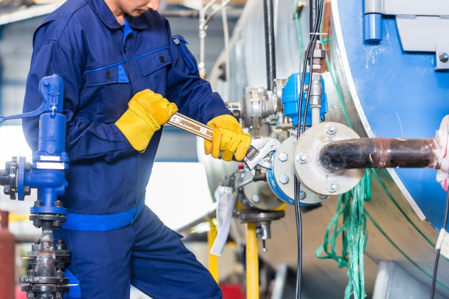

Proyectos y Servicios de Mantenimiento SANE
Innovación y servicio en mantenimiento industrial para satisfacer sus necesidades.
¿QUIÉNES SOMOS?
Somos una empresa mexicana dedicada al mantenimiento preventivo, correctivo y predictivo
a equipos e instalaciones eléctricas, mecánicas, electromecánicas, neumáticas, tecnológicas y de control,
así como suministro y elaboración de refacciones, componentes y estructuras.
MISIÓN
Brindamos servicios integrales de mantenimiento y proyectos de ingeniería con un enfoque innovador y compromiso inquebrantable...
VISIÓN
Ser reconocidos como líderes en la industria de mantenimiento y proyectos de ingeniería, destacando por nuestra capacidad técnica...

VALORES
Excelencia Operativa e Innovación: Nos comprometemos a alcanzar la excelencia operativa a través de la búsqueda continua de la excelencia técnica...
Compromiso y Colaboración: En el corazón de nuestra cultura empresarial está el compromiso con el cliente...
Ética y Seguridad: La integridad y la ética son los pilares fundamentales que guían nuestras operaciones...
Nuestros Servicios
Soluciones eficientes y sostenibles para garantizar el desarrollo de su industria.
Ingeniería
Diseño y ejecución de proyectos con personal altamente capacitado.
Mantenimiento
Preventivo, correctivo y predictivo para asegurar la continuidad operativa.
Voz y Datos
Infraestructura y telecomunicaciones para su negocio.
Programación
Desarrollo de software y soluciones tecnológicas a medida.
Proyectos Destacados
Explora los proyectos que hemos realizado con éxito para nuestros clientes.
Cambio de Tuberías de Agua Grado Alimenticio
Recientemente reemplazamos sistemas de tuberías de agua con especificaciones de grado alimenticio, asegurando estándares de higiene y eficiencia en instalaciones industriales.

Reubicación de Equipos
Reorganizamos el layout industrial, optimizando la disposición de equipos para mejorar la eficiencia operativa y el flujo de trabajo.
Mantenimiento de Bandas
Realizamos mantenimiento preventivo y correctivo a bandas transportadoras, maximizando su vida útil y garantizando un rendimiento óptimo.